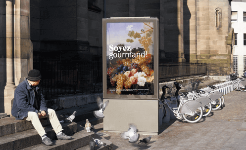
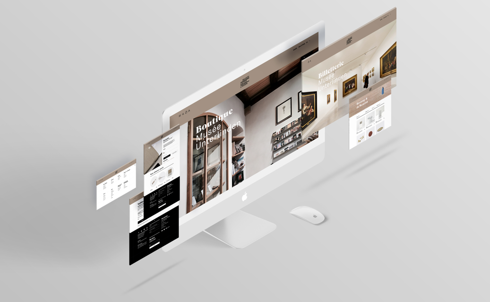

Branding
Product Design
Selon is a watch concept linked to a stellar map that continuously changes depending on the time of day, offering a different experience to the user from dusk till dawn. It also includes a watch, a screen saver, and an application.
The screen saver and the application offer a real time experience, showing what stars, constellations or planets you will be able to see in the night sky, any given day of the year. It can also work as a hand-held planetarium during day time even when celestial object are not visible.

